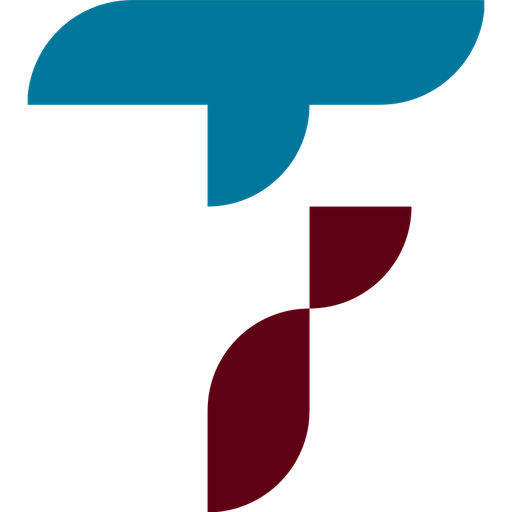

İş Birlikleri
Sivil toplum kuruluşları, yerel yönetimler ve eğitim kurumlarıyla kurduğumuz iş birlikleri.
Güç Birliğiyle Daha Fazlasını Başarıyoruz
Federasyonumuz, üç ana alanda kurumsal iş birlikleri geliştirir; bu iş birlikleri sahadaki etkimizi büyütür.
Sahadaki Etkimizi Büyüten Ortaklarımız
Aşağıdaki kurumlar örnek iş birliği ortaklarımızı temsil eder (demo listedir).

Karadeniz Kalkınma Vakfı
Sivil Toplum KuruluşuBölgesel kalkınma projelerinde federasyonumuzla ortak çalışmalar yürüten vakıf.
DetaylarAnadolu Hemşehri Dernekleri Platformu
Sivil Toplum KuruluşuFarklı hemşehri federasyonlarını bir araya getiren platformla ortak etkinlikler düzenliyoruz.
DetaylarTrabzon Büyükşehir Belediyesi Kültür Müdürlüğü
Yerel YönetimKültürel etkinlik ve tanıtım projelerinde memleketimizin belediyesiyle iş birliği yaparız.
DetaylarŞile Belediyesi
Yerel YönetimŞile Trabzonlular Derneği'nin faaliyetlerini destekleyen yerel yönetim ortağımız.
DetaylarKaradeniz Teknik Üniversitesi Mezunlar Derneği
Eğitim KurumuBurs ve mentorluk programlarında üniversite mezunlarıyla ortak çalışırız.
Detaylarİstanbul Ticaret Üniversitesi Sosyal Sorumluluk Merkezi
Eğitim KurumuStaj ve gönüllülük projelerinde genç hemşehrilerimize kapı aralayan eğitim ortağımız.
DetaylarFederasyon Süreçlerimize Değer Katan Ortaklarımız
Federasyonumuzun işleyişine teknik ve profesyonel hizmetlerle destek veren çözüm ortaklarımız (demo listedir). Detaylar için bir karta dokunun.
Bizimle İş Birliği Yapmak İster misiniz?
Kurumunuzla federasyonumuz arasında bir iş birliği fırsatı görüyorsanız sizinle tanışmak isteriz.